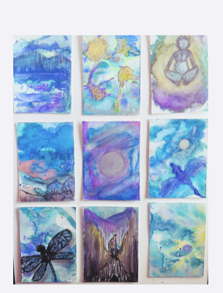

New — Pre-Order
Stormwalker Medicine Cards
The Heyoka Mirror
You don't come to these cards for comfort.
You come for truth.
The Stormwalker Medicine Deck is a mirror — designed to reflect what you already feel… but haven't fully faced.
Each card cuts through patterns, distortion, and emotional noise so you can see clearly, choose differently, and move forward with intention.
This isn't passive guidance.
This is participation.
Price increases after pre-sale
Pre-Order Your Deck Learn More
Limited first run. Each deck is part of the original Stormwalker release.
A Glimpse of the Deck
From the Heyoka Mirror
A handful of cards from the original Stormwalker release — painted, numbered, and carried with intention.
Scan for the Digital Guidebook
Companion Guidebook
A guidebook that walks with your deck.
Every deck pairs with a digital guidebook so you can carry the full card meanings, reflection prompts, and Heyoka interpretations with you anywhere.
Scan the QR code with your phone camera to open the guidebook.
Kelly Trett-Thomason — Spiritual Empowerment Coach & Reiki Practitioner
Stormwalker Coaching for Real-Life Storms.
This is not therapy and it's not traditional life coaching.
The Stormwalker Method is spiritual, grounded, no-fluff support for the seasons of life that feel heavy, chaotic, or in-between.
Together, we navigate the storm, honor the lesson, and help you rise into a clearer, steadier version of yourself.
About Kelly
Kelly Trett-Thomason, CHt., is a Spiritual Empowerment Coach, Reiki Practitioner, Appalachian Energy & Folk Medicine Practitioner, and creator of The Stormwalker Method.
Kelly works with people who are moving through real-life storms — grief, transition, burnout, spiritual awakening, and the kind of stuckness that doesn't lift just because you read something inspirational online. Her work is grounded, intuitive, and designed to help you find your center again when life feels “too much.”
Stormwalker Coaching isn't about chasing a perfect life. It's about learning how to walk through the hard seasons with more clarity, regulation, and self-trust. Sessions may weave together guided statework (trance-like relaxation), energy awareness, simple somatic tools, spiritual perspective, and practical next steps you can actually use in your day-to-day life.
Kelly honors that while she has been placed here as a healer, all true healing comes from the Divine — the Great Mystery, the Universe, God. Her role is to show up, hold space, and do the work she is guided to do, while the act of healing itself remains in the hands of the Divine.
She also carries ancestral knowledge from Appalachian folk medicine — including speaking out fire, easing burns, reducing irritation from poison ivy or oak, calming thrush discomfort, and energy work from mountain conjure-root lineage. These practices are honored as part of her heritage and are used as spiritual and energetic support, not as medical treatment or a substitute for appropriate medical care.
Training & Lineage:
Certified Hypnotherapist (CHt.) • Spiritual Empowerment Coach • Reiki Practitioner •
Crystal Energy Work • Appalachian Energy & Folk Medicine Practitioner
The Stormwalker Method
Five phases to transmute challenge into clarity:
- Recognition — Identify the storm and its cycle.
- Descent — Guided statework to safely enter the root of the storm.
- Transmutation — Release emotional charge and rewrite inner contracts.
- Integration — Anchor the new pattern with daily practice.
- Emergence — Step forward renewed and embodied.
Symbols Behind the Stormwalker Path
The Stormwalker path is built on three core symbols — the Phoenix, the Dragon, and the Dragonfly — each representing a different phase of transformation.
The Phoenix reminds us that some endings are really beginnings in disguise. Fire strips away what cannot remain and makes room for what is meant to rise. Many Stormwalker journeys begin in those moments of collapse — when what once felt stable no longer holds, and you're left standing in the ashes of “what used to be.” This work honors that fire, not as punishment, but as a doorway into rebirth.
The Dragon represents strength, protection, and the courage to stand fully in one’s power. Where the Phoenix speaks to rebirth, the Dragon speaks to sovereignty — learning to hold your ground, protect what matters, and move through life with intention instead of fear. It is the steady force that walks beside transformation, reminding us that power and compassion can exist together.
The Dragonfly spends most of its life unseen, underwater, before it ever takes flight. It symbolizes awakening, clarity of sight, and the moment you realize you cannot stay who you were. Dragonfly medicine is about seeing through illusion, trusting your own timing, and allowing yourself to become something freer, lighter, and more true.
Together, these symbols shape the Stormwalker path: we acknowledge the fire, claim our strength, honor the becoming, and learn to walk through life’s storms with more courage, compassion, and spiritual perspective. This isn’t only a coaching framework — it’s a rebirth journey Kelly has lived through herself, now offered as a guided path for others.
Guided Audio Experiences
You Can Let Go Now
You don’t have to carry everything all the time.
You Can Let Go Now is a calming guided audio experience created to help you release what you’ve been carrying and return to a more grounded, relaxed state.
This session uses a gentle, conversational hypnotic approach, allowing your mind and body to settle naturally without pressure or force. It is designed as a focused 8–9 minute reset that fits easily into your day while still creating a noticeable shift in how you feel.
Perfect for moments when your thoughts feel overwhelming, your body feels tense, or you simply need a place to pause and reset.
Even a few minutes with this can create a noticeable shift.
- Format: Digital MP3
- Runtime: Approximately 9 minutes
- Best with: Earbuds or headphones, so you can fully settle in and focus.
Delivery: After purchase, your recording will be sent to the email provided at checkout within 24 hours (often sooner).
Give yourself a moment. Press play.
Guided Audio Experiences
Enter the Quiet Mind
Your mind doesn’t have to be this loud.
Enter the Quiet Mind is a guided audio experience designed to help you step out of mental noise and into a calmer, more settled state.
This session uses a gentle, conversational hypnotic approach to allow your thoughts to slow naturally—without force, frustration, or trying to “shut your mind off.”
Instead of resisting your mind, you begin to move with it until it softens on its own.
Even a few minutes with this can create a noticeable shift in how your mind feels.
Perfect for moments when:
- your thoughts won’t stop racing
- you feel mentally overwhelmed
- you’re stuck in overthinking
- or you just need a few minutes of quiet
- Format: Digital MP3
- Runtime: Approximately 8 minutes
- Best with: Earbuds or headphones, so you can fully settle in and focus.
Delivery: After purchase, your recording will be sent to the email provided at checkout within 24 hours (often sooner).
Step in. Let it quiet.
Step into Stormwalker Medicine
Dreams, symbols, art, and reflection now have their own portal inside Empowered Transcendence.
Enter a moonlit forest clearing where stormwater gathers into a still pool. When the storm clears and moonlight brightens, the Storm Mirror reflects what could not be seen before.
Enter Stormwalker Medicine Go to Storm Mirror Stormwalker Medicine Cards
Stormwalker Collection

Artwork featured throughout this site is original work by Kelly Trett-Thomason. Selected pieces may be available.
This artwork isn’t here as decoration — it’s part of the Stormwalker path. If a piece stirs something in you, you’re not imagining it.
Many visitors ask whether the artwork is just a graphic or something they can actually own. It’s real, and it’s part of the living story behind this work.
Stormwalker Coaching — FAQ
Is this therapy?
No. Stormwalker Coaching is not therapy, counseling, or psychiatry. It does not diagnose, treat, or manage mental health conditions. This work sits in the realm of spiritual guidance, emotional navigation, and personal empowerment. If you are in crisis or need clinical support, please reach out to a licensed mental health professional or emergency service in your area.
Is this traditional life coaching?
No. Traditional coaching often focuses on goals, productivity, and performance. Stormwalker Coaching is different. It is for people who are in the middle of something big — grief, transition, burnout, spiritual awakening, identity shifts — and need steady, grounded support as they move through it. This work is less “how to crush your to-do list” and more “how to survive the storm and come out clearer and more yourself on the other side.”
What does a session feel like?
Sessions are calm, honest, and judgment-free. We talk, map what you're walking through, and then use tools like guided statework, energy awareness, simple somatic practices, and spiritual perspective to help your system settle and re-orient. You stay in control the whole time. The goal is not to “fix” you — it's to help you feel safer inside your own life and more equipped to navigate what's in front of you.
Who is this for?
Stormwalker Coaching is for people who feel like they're in the middle of a storm — emotionally, spiritually, or situationally. It's especially supportive for sensitives, empaths, spiritual seekers, and those rebuilding after hard seasons. If you're tired of pretending you're fine and ready to walk with someone who has lived through their own storms, this path may be a good fit.
Contact Kelly
Send a message and I’ll reply from kelly@empoweredtranscendence.com.